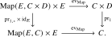
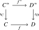

We now introduce the mapping anima between two categories \(C\) and \(D\): an anima whose objects are functors from \(C\) to \(D\). The mapping animae will play an important role in the development of the theory: frequently, we may check conditions at the level of mapping animae. We introduce \(\Map(C,D)\) via its universal property in terms of currying/uncurrying functors.
Axiom B.3 (Evaluation and currying for mapping animae). For categories \(C,D\), there is an anima \(\Map(C,D)\) equipped with an evaluation functor \[ \ev_{\Map}\colon \Map(C,D)\times C\longrightarrow D. \] If \(X\) is an anima and \(h:X\times C\to D\) is a functor, there is a functor \(h_c\colon X\to\Map(C,D)\) equipped with an identification \((h_c)^u= h\), where \[ a^u:=\ev_{\Map}\circ(a\times\id_C):X\times C\longrightarrow D. \] For any \(a,b\colon X\to\Map(C,D)\), the functor \[ (-)^u\colon (a= b)\longrightarrow(a^u= b^u) \] induced by product functoriality and postwhiskering with evaluation is an equivalence.
We refer to the functor \(h_c\) as the currying of \(h\), and to \(a^u\) as the uncurrying of \(a\). Note that the universal property of \(\Map\) only holds for anima parameters. A more general form of currying with an arbitrary category as parameter will be provided by functor categories in Section 1.7.
Construction 1.4.1 (Functors as points of mapping animae). A functor \(f\colon C\to D\) determines a point \(\ulcorner f\urcorner\colon *\to\Map(C,D)\) by currying \(f\pr_2\colon * \; \times \; C\to D\). Conversely, a point \(a:*\to\Map(C,D)\) determines the functor \[ C\simeq *\times C\xrightarrow{a\times\id_C}\Map(C,D)\times C \xrightarrow{\ev_{\Map}}D. \] The functor represented by \(\ulcorner f\urcorner\) is identified with \(f\). Moreover, for two points \(a,b\), uncurrying followed by prewhiskering with \(C\simeq *\times C\) gives an equivalence from \((a= b)\) to the anima of identifications between their represented functors, where we use Lemma 1.3.10. This equivalence also identifies a point with the representative of its represented functor.
From now on we pass freely back and forth between a functor and its representing point using the comparisons just described; in particular, we will usually denote the point \(\ulcorner f\urcorner\) simply by \(f\).
Accordingly, a functor \(H\colon\Map(A,B)\to\Map(C,D)\) sends a functor \(f\colon A\to B\) to a functor \(H(f)\colon C\to D\), and induces a functor \[ (f=g)\longrightarrow(H(f)=H(g)). \] These operations respect composition and identities. If \(H\) is an equivalence, the induced functor on identification animae is an equivalence as well.
Proposition 1.4.2 (Uncurrying). For every anima \(X\) and categories \(C,D\), uncurrying is represented by an equivalence \[ (-)^u\colon\Map\bigl(X,\Map(C,D)\bigr) \iso\Map(X\times C,D). \]
Proof
Put \(P:=\Map(X,\Map(C,D))\). Iterated evaluation gives a functor \[ P\times X\times C \longrightarrow \Map(C,D)\times C \xrightarrow{\ev_{\Map}}D. \] Since \(P\) is an anima, currying this functor constructs an actual functor \((-)^u\colon P\to\Map(X\times C,D)\).
For the inverse, put \(Q:=\Map(X\times C,D)\), and consider the evaluation functor \(Q\times X\times C\to D\). If we first curry in the variable \(C\), with anima parameter \(Q\times X\), and then curry in the variable \(X\), with anima parameter \(Q\), we obtain a functor \(Q\to P\). To verify that both composites are the identity, it suffices by Axiom B.3 to uncurry: once in \(X \times C\) for the composite on \(Q\), and successively in \(X\) and \(C\) for the composite on \(P\). In both cases, the resulting identification follows from the defining identifications for currying.
Construction 1.4.3. The mapping animae are covariantly functorial in the second variable and contravariantly functorial in the first. For \(g\colon D\to E\), curry the composite \[ \Map(C,D)\times C\xrightarrow{\ev_{\Map}}D\xrightarrow{g}E \] to obtain \(g_*\colon\Map(C,D)\to\Map(C,E)\). For \(f\colon B\to C\), curry evaluation precomposed with \(\id_{\Map(C,D)}\times f\) to obtain \(f^*\colon\Map(C,D)\to\Map(B,D)\). We call these functors postcomposition with \(g\) and precomposition with \(f\), respectively.
An identification \(\gamma\colon g= g'\) induces an identification \(\gamma_*\colon g_*= g'_*\). Indeed, whisker \(\gamma\) with evaluation and use the uncurrying comparisons for \(g_*\) and \(g'_*\) to obtain an identification between their uncurried functors. Lift this through the equivalence of animae of identifications in the mapping-anima rule. Similarly, for \(\varphi\colon f= f'\), pair \(\varphi\) with the identity on \(\Map(C,D)\), postcompose with evaluation, and lift to obtain \(\varphi^*\colon f^*= f'^*\).
Lemma 1.4.4. For every category \(C\), the anima \(\Map(C,*)\) is contractible.
Proof
We must show that the functor \(\Map(C,*)\to *\) is an equivalence. An inverse is given by the functor \(*\to\Map(C,*)\) obtained by currying the terminal functor \(*\times C\to *\). The composite on \(*\) is automatically identified with the identity. For the composite on \(\Map(C,*)\), it suffices by the mapping-anima axiom to compare the two uncurried functors \(\Map(C,*)\times C\to *\). These are again identified by the terminal-category axiom.
Proposition 1.4.5. For categories \(C,D,E\), the projections induce an equivalence \[ (\pr_{1,*},\pr_{2,*})\colon \Map(E,C\times D)\iso\Map(E,C)\times\Map(E,D). \]
Proof
We define a functor \[ h\colon\Map(E,C)\times\Map(E,D)\longrightarrow\Map(E,C\times D) \] by pairing the two functors \[ \begin{aligned} (\Map(E,C)\times\Map(E,D))\times E &\xrightarrow{\pr_1\times\id_E}\Map(E,C)\times E \xrightarrow{\ev_{\Map}}C,\\ (\Map(E,C)\times\Map(E,D))\times E &\xrightarrow{\pr_2\times\id_E}\Map(E,D)\times E \xrightarrow{\ev_{\Map}}D, \end{aligned} \] and currying the resulting functor to \(C\times D\). This is possible since \(\Map(E,C)\times\Map(E,D)\) is an anima.
We start by showing that the composite \((\pr_{1,*},\pr_{2,*})\circ h\) is identified with the identity. It will suffice to show this after projecting to both factors, and by symmetry we may just do this for \(\Map(E,C)\). In other words, we must show that \(\pr_{1,*}\circ h\) is identified with \(\pr_1\). It will in turn suffice to show this after uncurrying. But the uncurrying of both functors is identified with \[ (\Map(E,C)\times\Map(E,D))\times E \xrightarrow{\pr_1\times\id_E}\Map(E,C)\times E \xrightarrow{\ev_{\Map}}C, \] by the construction of \(h\) and the definition of postcomposition.
We will now show that also the composite
\(h\circ(\pr_{1,*},\pr_{2,*})\) is identified with the identity.
Uncurrying reduces this to comparing two functors
\[
\Map(E,C\times D)\times E\longrightarrow C\times D.
\]
It suffices to compare their two projections, and again we may just
consider the \(C\)-component. The projection of the uncurried identity
is \(\pr_1\circ\ev_{\Map}\); the projection of the other functor is
\(\ev_{\Map}\circ(\pr_{1,*}\times\id_E)\). These are identified by the
defining commutative square for postcomposition:

We next compare uncurrying with substitution in the anima parameter.
Lemma 1.4.6 (Uncurrying and substitution). Let \(C,D\) be categories, \(X,Y\) animae, and \(f\colon X\to\Map(C,D)\) and \(\sigma\colon Y\to X\) functors. Uncurrying commutes with substitution: there is an identification \[ (f\circ\sigma)^u=f^u\circ(\sigma\times\id_C). \] This comparison is compatible with identifications of the input functors, with successive substitution, and with substitution by an identity functor, using the associativity and unitality identifications. Moreover, uncurrying preserves identity identifications and their vertical composition.
Proof
Using the definition of uncurrying, functoriality of products, and associativity, we obtain identifications \[ \begin{aligned} (f\circ\sigma)^u &=\ev_{\Map}\circ((f\circ\sigma)\times\id_C)\\ &=\ev_{\Map}\circ(f\times\id_C)\circ(\sigma\times\id_C)\\ &=f^u\circ(\sigma\times\id_C). \end{aligned} \] The compatibilities follow from those for pairing and composition, as in Lemma 1.3.16; the unit comparison also uses equation (1.1). Preservation of identity identifications and vertical composition follows from the corresponding properties of products and whiskering with evaluation. We leave the details to the reader.
We can now lift composition of functors to an operation on mapping animae.
Construction 1.4.7. For categories \(C\), \(D\) and \(E\), consider the double evaluation functor \[ \Map(D,E)\times\Map(C,D)\times C\xrightarrow{\id \times \ev} \Map(D,E) \times D \xrightarrow{\ev} E. \] Currying in \(C\) defines a functor \[ \mu_{C,D,E} \colon \Map(D,E)\times\Map(C,D)\longrightarrow\Map(C,E), \] which by construction comes with an identification \[ \ev_{\Map}\bigl(\mu(g,f),c\bigr) = \ev_{\Map}\bigl(g,\ev_{\Map}(f,c)\bigr). \] The projection \(*\times C\to C\) similarly curries to a functor \[ \eta_C\colon *\longrightarrow\Map(C,C), \] whose evaluation is identified with that projection.
We may use these functors to obtain composition and evaluation for term expressions. Given terms \[ \Gamma\vdash f:\Map(C,D) \qquadtext{and} \Gamma\vdash g:\Map(D,E), \] we may form \[ \Gamma\vdash g\circ f:=\mu_{C,D,E}(g,f):\Map(C,E). \] Likewise, given a term \(\Gamma\vdash f:\Map(C,D)\) and \(\Gamma\vdash x:C\), we define \[ \Gamma\vdash f(x):=\ev_{\Map}(f,x):D. \]
Proposition 1.4.8 (Coherence of composition). Composition in mapping animae has specified left and right unitors and an associator. These satisfy the triangle and pentagon identities through specified identifications.
Proof
Throughout the proof, we make use of the following notation: Given a ‘parameter anima’ \(P\) and a functor \(f\colon P\to\Map(C,D)\), we define \[ \widetilde{f} \; := \; (\pr_1,f^u) \colon P \times C \to P \times D. \] If \(g\colon P\to\Map(D,E)\) is any other functor, then there is an identification \[ \widetilde{g} \circ \widetilde{f} = \widetilde{g \circ f}; \] indeed, we may construct this identification componentwise, where it is clear for the first component and follows from the defining property of \(\mu_{C,D,E}\) in the second component. The compatibility with the primitive coherence identifications and change of parameter can likewise be checked after both projections, using Lemmas 1.3.16 and 1.4.6 and the coherence axioms for composition.
We now use this to construct the associator. Given a third functor \(h\colon P \to \Map(E,F)\), we obtain three composable functors \[ P\times C \xrightarrow{\widetilde{f}} P\times D \xrightarrow{\widetilde{g}} P\times E \xrightarrow{\widetilde{h}} P\times F. \] Using the primitive associator and the previous comparisons, we get identifications \begin{align*} \widetilde{(h \circ g) \circ f} &= \widetilde{h \circ g} \circ \widetilde{f} = (\widetilde{h} \circ \widetilde{g}) \circ \widetilde{f} = \widetilde{h} \circ (\widetilde{g} \circ \widetilde{f}) = \widetilde{h} \circ \widetilde{g \circ f} = \widetilde{h \circ (g \circ f)}. \end{align*} Passing to the second component of this identification, we obtain an identification between the uncurrying of \((h\circ g)\circ f\) and that of \(h\circ(g\circ f)\); we may then use the mapping-anima axiom to lift this to the desired associator.
For the unitors, note that the constant functor \(\const_{\id_C}\colon P \to \Map(C,C)\) corresponds under (un)currying to the projection functor \(\pr_2\colon P \times C \to C\), and so the associated functor \(\widetilde{\const_{\id_C}}\colon P \times C \to P \times C\) is identified with the identity. We then consider the unitors \(\lambda_{\widetilde{f}} : \id_{P \times D} \circ \widetilde{f} = \widetilde{f}\) and \(\rho_{\widetilde{f}} : \widetilde{f} \circ \id_{P \times C} = \widetilde{f}\), and with the same arguments as above deduce the desired relations \(\id_D \circ f = f\) and \(f \circ \id_C = f\).
Observe that both of these constructions are compatible with substitution in the parameter anima \(P\):
given a map of animae \(\sigma\colon Q \to P\), we can construct identifications
\[
\alpha^P_{h,g,f} \star \sigma = \alpha^Q_{h\sigma,g\sigma,f\sigma}, \qquad \lambda_f^P \star \sigma = \lambda_{f\sigma}^Q, \qquad \rho_f^P \star \sigma = \rho_{f \sigma}^Q,
\]
up to the substitution comparisons relating e.g. \(((h \circ g) \circ f)\sigma\) to \(((h \sigma) \circ (g \sigma)) \circ f\sigma\). To see this, note that by Lemma 1.4.6 there is a commutative square
 Using this for \(f\), \(g\) and \(h\) and applying the interchange law and the various primitive coherence identities, we get the relation on associators after uncurrying, which suffices to establish the relation. The analogous argument applies to the unitors.
Using this for \(f\), \(g\) and \(h\) and applying the interchange law and the various primitive coherence identities, we get the relation on associators after uncurrying, which suffices to establish the relation. The analogous argument applies to the unitors.
For the pentagon, assume given a fourth map \(k\colon P \to \Map(F,G)\), and consider the primitive pentagon identification for the four functors \[ P\times C \xrightarrow{\widetilde{f}} P\times D \xrightarrow{\widetilde{g}} P\times E \xrightarrow{\widetilde{h}} P\times F \xrightarrow{\widetilde{k}} P \times G. \] For each of the five vertices of the resulting pentagon, we may use iterated identifications of the form \(\widetilde{g} \circ \widetilde{f} = \widetilde{g \circ f}\) to put them into the form \(\widetilde{u}\) for some \(u\). By the construction of the associator, the substitution compatibility, and interchange, projecting the five edges of the resulting pentagon to the second component identifies them with the uncurryings of the five edges of the desired pentagon. The primitive pentagon identification therefore gives an identification between the uncurryings of the two composites around this pentagon. The mapping-anima axiom then provides the desired pentagon identification.
The triangle identification is obtained by similar means.
We end the section by establishing various further properties about mapping animae.
Proposition 1.4.9. For functors \(f\colon A\to B\) and \(g\colon B\to C\) and any category \(E\), there is a canonical identification \[ g_*\circ f_*=(g\circ f)_* \] of functors \(\Map(E,A)\to\Map(E,C)\).
Proof
After uncurrying, both sides evaluate a functor \(E\to A\) and then compose it with \(f\) and \(g\). The primitive associator gives the comparison between these uncurried functors, and we may lift it by Axiom B.3.
Proposition 1.4.10. For functors \(f\colon A\to B\) and \(g\colon B\to C\) and any category \(E\), there is a canonical identification \[ f^*\circ g^*=(g\circ f)^* \] of functors \(\Map(C,E)\to\Map(A,E)\).
Proof
This is proved in the same way, using the primitive associator after uncurrying.
Proposition 1.4.11. For a functor \(f\colon C\to D\), the following are equivalent:
(i) The functor \(f\) is an equivalence.
(ii) For every category \(E\), the functor \(f_*\colon\Map(E,C)\to\Map(E,D)\) is an equivalence.
(iii) For every category \(E\), the functor \(f^*\colon\Map(D,E)\to\Map(C,E)\) is an equivalence.
If \(C\) and \(D\) are animae, it suffices in (ii) or (iii) to let \(E\) range over animae.
Proof
We prove (i) \(\Leftrightarrow\) (ii); the other case is dual. An inverse of \(f\) induces an inverse of every \(f_*\). Conversely, pick an inverse of \(f_*\colon\Map(D,C)\to\Map(D,D)\), and let \(g\colon D \to C\) be the evaluation of this inverse at \(\id_D\). The unit of the equivalence and the beta comparison for postcomposition give an identification \(f\circ g=\id_D\). Now, since \(f_*\colon\Map(C,C)\to\Map(C,D)\) is an equivalence, it induces an equivalence on animae of identifications. It follows that the chain of identifications \[ f \circ (g \circ f) = (f \circ g) \circ f = \id_D \circ f = f = f \circ \id_C \] lifts to an identification \(g\circ f=\id_C\). Here we use Construction 1.4.1 and the beta comparison to identify the action of \(f_*\) on functors with postcomposition by \(f\). If \(C\) and \(D\) are animae, both choices of \(E\) in this argument are animae, showing the final claim.
1.4.1 Collections of objects
We now define the groupoid core of a category, which we may think of as its collection of objects.
Definition 1.4.12. For any category \(C\), we define the groupoid core of \(C\) to be \[ C^\simeq:=\Map(*,C). \] It comes equipped with the canonical functor \[ \imath_C\colon C^\simeq \simeq C^\simeq\times * \xrightarrow{\ev_{\Map}}C. \]
The functor \(\imath_C\) displays the objects of \(C\) with the anima \(C^\simeq\) as parameter. It is universal among functors from animae in the following sense.
Corollary 1.4.13 (Universal property of the groupoid core). For any anima \(X\) and any category \(D\), postcomposition induces an equivalence \[ (\imath_D)_*\colon\Map(X,D^\simeq)\iso\Map(X,D). \]
Proof
By Proposition 1.4.2 and the equivalence \(X\times *\simeq X\), there are equivalences \[ \Map(X,D^\simeq) =\Map(X,\Map(*,D)) \simeq\Map(X\times *,D) \simeq\Map(X,D). \] By the definition of \(\imath_D\), their composite is postcomposition with \(\imath_D\).
Remark 1.4.14. The anima \(C^\simeq\) also describes all functors of the form \(x\colon\Gamma\to C\) where \(\Gamma\) is an anima. By the previous result, it suffices to understand the universal such functor, i.e. \(\imath_C\colon C^\simeq\to C\).
Proposition 1.4.15. For every anima \(A\), the canonical functor \(\imath_A\colon A^\simeq\to A\) is an equivalence. Its inverse is obtained by currying the projection \(A\times *\to A\).
Proof
For every anima \(X\), postcomposition with \(\imath_A\) induces an equivalence by Corollary 1.4.13. Since both \(A^\simeq\) and \(A\) are animae, Proposition 1.4.11 shows that \(\imath_A\) is an equivalence. The defining identification for currying identifies its composite with the stated inverse with \(\id_A\).
Construction 1.4.16. A functor \(f\colon C\to D\) induces a functor
\[
f^\simeq:=f_*\colon C^\simeq=\Map(*,C)\longrightarrow\Map(*,D)=D^\simeq.
\]
The defining identification for postcomposition makes the square

Lemma 1.4.17. For categories \(C\) and \(D\), the functor \((\pr_{C}^{\simeq}, \pr_{D}^{\simeq})\colon (C \times D)^{\simeq} \to C^{\simeq} \times D^{\simeq}\) is an equivalence.
Proof
This is a special case of Proposition 1.4.5.